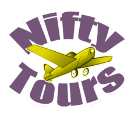

Come with us! 503-555-1212
Spoken French sounds beautiful, but...
Can you read this?
- les toilettes sont de cette facon
- les touristes payent le prix fort
- je vous tuerai
- If not then read on
Come with us! 503-555-1212
Can you read this?
Cette action anti-cancérigène est déjà remarquable mais le DIM ajoute aujourd'hui une corde inattendue à son arc. Dans une étude publiée le 14 octobre dans les Proceedings of the National Academy of Sciences (PNAS), une équipe américano-chinoise vient de montrer que la molécule en question conférait aux rats et souris une protection conséquente contre les effets mortels d'une forte radioactivité. Pour le déterminer, les auteurs de cette recherche ont exposé ces rongeurs à une dose de 13 grays qui, en temps normal, aurait dû les tuer. On estime qu'un organisme humain ne résiste pas à une dose supérieure à 10 grays. D'ailleurs, dans le cadre de cette étude, tous les rats du groupe témoin, qui ont été irradiés mais n'ont pas reçu de DIM, sont morts dans les huit jours qui ont suivi.
Cela n'a pas été le cas de tous ceux à qui l'on injectait la molécule. Dans la meilleure des configurations (dose élevée et première injection 10 minutes après l'irradiation), jusqu'à 60 % des rongeurs étaient toujours en vie un mois après l'irradiation, alors même qu'ils avaient reçu une dose considérée comme létale. Ce pourcentage de survie à 30 jours montait à 80 % pour une dose de 9 grays (qui tuait 80 % des animaux n'ayant pas reçu le traitement) et à 100 % pour une dose de 5 grays, laquelle venait à bout d'un quart des rats sans DIM. Les chercheurs ont constaté que des doses plus faibles étaient moins efficaces et que plus la première injection était proche de l'irradiation, plus les rats avaient de chances de s'en tirer.
Restait à déterminer comment le DIM s'y prenait pour protéger des organismes ayant été exposés à des doses de radiations normalement mortelles. Après avoir mené toute une série d'expériences sur des cellules en culture, les chercheurs ont fini par mettre au jour un double mécanisme. Ils se sont d'abord rendu compte que l'administration de DIM activait la protéine dite ATM, spécialisée dans la réparation de l'ADN, par exemple lorsque celui-ci est brisé sous l'effet de l'irradiation. L'étude apporte une nuance intéressante en montrant que cette action de réparation n'a pas lieu quand la cellule en question est... cancéreuse. Comme si le DIM ne conférait sa protection qu'à des cellules saines.